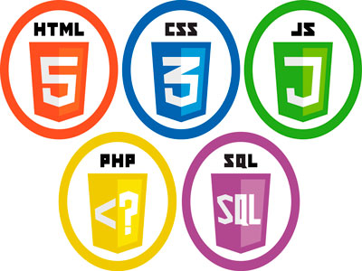

|
A web foi inventada em 1992 por Sir Tim Berners-Lee, Atualmente, Tim é diretor do World Wide Web Consortium(W3C), pesquisador sênior do laboratorio da ciencia da computação e inteligência artificial (CSAIL) do instituto de tecnologia de massachusetts (MIT). |
|
O desenvolvedor front-end: é responsável por “dar vida” à interface.... Por isso, é importante que esse desenvolvedor também se preocupe com a experięncia do usuário. Na parte de estudo, este profissional foca em HTML (linguagem de marcaçăo), CSS (linguagem de estilo) e JavaScript (linguagem de script/programaçăo)  |
|
Desenvolvedor back-end: é o responsável por dinamizar o site através das linguagens de programação (Java,C#,DELPHI,PHP). Cada um dos papéis são muito importantes e eles possui dependencia um do outro. |